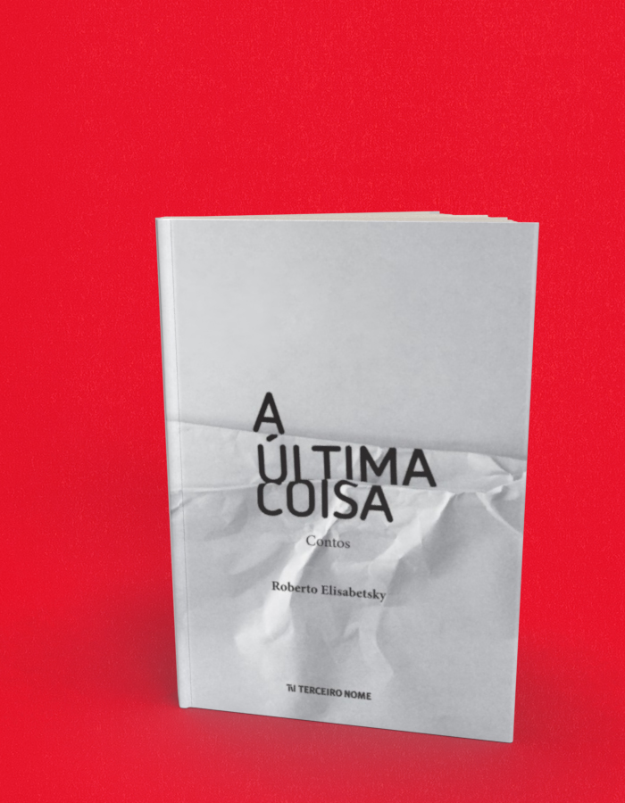

A última coisa espaço
A compra acontece no site da livraria, em uma nova aba. Consulte lá os preços e a disponibilidade. Procure pelo título ou ISBN deste livro.
- Autoria / créditos
- Roberto Elisabetsky
- ISBN
- 9788578161583
- Páginas
- 164
- Formato
- 13 cm x 20 cm
- Acabamento
- brochura
Sobre o livro
Era a última coisa que eles esperavam ouvir:
- o marido vingativo faz uma promessa que pretende cumprir...
- a ladra obsessiva cai numa armadilha...
- o escritor sem inspiração recebe uma ajuda inesperada...
- o chofer de táxi suspeita de um passageiro...
- a menina no parque nada tem de inocente...
- um telefonema obriga o advogado a encarar seu passado...
- a modelo nos quadros da exposição esconde um segredo...
E, no final de cada conto... algo acontece que nem personagens nem leitores estavam minimamente preparados!
Roberto Elisabetsky nasceu em São Paulo, em 1953. Deixou para trás a carreira de engenheiro para estudar cinema na Inglaterra. Trabalhou com produção cinematográfica em Nova York, onde concluiu o mestrado em Artes da Comunicação no NY Institute of Technology. Foi professor do curso de Rádio e TV da ECA-USP. É dramaturgo, roteirista, tradutor e versionista para cinema, TV e teatro musical. Como escritor, publicou o romance Cozinha caiçara 2 pela Editora Paulicéia e, pela Terceiro Nome, a coletânea de contos A última coisa e o romance Cadafalso . Integra o Clube das Três, grupo dedicado à análise e produção literária e à promoção de encontros com autores, editores e críticos de literatura.
← Voltar ao catálogo